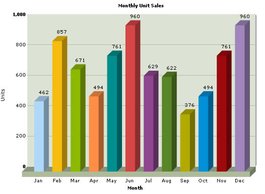

Creating your First Chart |
||||||||||||||||||||||||||
Here, we'll guide you through the process of creating your first chart. For a head start, we'll create a simple 3D Column Chart to visually depict Monthly Sales Summary. To create any chart using FusionCharts, you need to assemble three things:
Before we get on to assemble the above items, let's create a new folder that will serve as our playground for our trials and researches. Create a new folder named as c:\FusionCharts on your computer. We'll keep all our examples within this folder. For our first chart example, we'll create another folder within the above folder. Name the new folder as MyFirstChart so that the structure now looks like c:\FusionCharts\MyFirstChart. |
||||||||||||||||||||||||||
| All examples discussed in the documentation are present in Download Package under Code > MyFirstChart folder. | ||||||||||||||||||||||||||
| Setting the Chart SWF | ||||||||||||||||||||||||||
Now, to build the chart, we need to copy chart SWF files within this folder. Before that, create another folder FusionCharts under c:\FusionCharts, so that the new folder looks like c:\FusionCharts\FusionCharts. This folder would be our container for all the chart SWF files. Copy all the chart SWF files (from Download Package > Charts folder) into this newly created folder (c:\FusionCharts\FusionCharts\). This folder serves as the central location for charts. All our examples would use the charts contained in this single folder. |
||||||||||||||||||||||||||
| Even when you're using FusionCharts on your website, it's a good idea to keep all the chart SWF files in a root level folder named as FusionCharts. This makes sure that you do not have multiple copies of the same chart SWF. So, updates of charts become easier, as you just have to copy-paste the new charts at one location. | ||||||||||||||||||||||||||
Now that the SWF files are set up, we move on to see how to create the XML data for our chart. |
||||||||||||||||||||||||||
| Creating the XML data document | ||||||||||||||||||||||||||
Before we build the chart, we first need to have the data that we'll represent on the chart. Since we're plotting monthly sales summary for a given year, our data in tabular form would look something like below. Each month given below would be represented on the chart as a 3D column. |
||||||||||||||||||||||||||
|
||||||||||||||||||||||||||
Now, as earlier mentioned, FusionCharts necessarily needs its data in pre-defined XML format. It cannot read any other format (including Excel, CSV or text data) apart from XML. So, we need to convert this data into XML. FusionCharts v3, the commercial version, has a visual XML Generator Utility to help you easily convert this tabular data into XML. The converted XML data would look as under: |
||||||||||||||||||||||||||
| <graph caption='Monthly Unit Sales' xAxisName='Month' yAxisName='Units' showNames='1' decimalPrecision='0' formatNumberScale='0'> <set name='Jan' value='462' color='AFD8F8' /> <set name='Feb' value='857' color='F6BD0F' /> <set name='Mar' value='671' color='8BBA00' /> <set name='Apr' value='494' color='FF8E46' /> <set name='May' value='761' color='008E8E' /> <set name='Jun' value='960' color='D64646' /> <set name='Jul' value='629' color='8E468E' /> <set name='Aug' value='622' color='588526' /> <set name='Sep' value='376' color='B3AA00' /> <set name='Oct' value='494' color='008ED6' /> <set name='Nov' value='761' color='9D080D' /> <set name='Dec' value='960' color='A186BE' /> </graph> |
||||||||||||||||||||||||||
Punch the above code in a text editor (e.g., Notepad) and save it as Data.xml under c:\FusionCharts\MyFirstChart folder. And yeah - don't worry about whatever spaghetti stuff you have just written - we'll soon cover them. Basically, what we've done above can be listed in the following points:
Just as a measure to check if the XML document is structurally valid, open the file in your browser. You should be able to see the XML data document in a formatted way, without any errors. And now, if you're running out of your patience to see this data in chart
format, let's quickly build the HTML container for this chart. |
||||||||||||||||||||||||||
| Creating the HTML container for chart | ||||||||||||||||||||||||||
| Each chart needs to be embedded in an HTML file before it can be viewed. So, to view our chart, we'll have to create an HTML wrapper for this one too. Pull up your text editor again and throw in the following code: | ||||||||||||||||||||||||||
| <html> <head> <title>My First FusionCharts</title> </head> <body bgcolor="#ffffff"> <OBJECT classid="clsid:D27CDB6E-AE6D-11cf-96B8-444553540000" codebase=http://download.macromedia.com/pub/shockwave/cabs/flash/swflash.cab#version=6,0,0,0" width="600" height="500" id="Column3D" > <param name="movie" value="../FusionCharts/FCF_Column3D.swf" /> <param name="FlashVars" value="&dataURL=Data.xml&chartWidth=600&chartHeight=500"> <param name="quality" value="high" /> <embed src="../FusionCharts/FCF_Column3D.swf" flashVars="&dataURL=Data.xml&chartWidth=600&chartHeight=500" quality="high" width="600" height="500" name="Column3D" type="application/x-shockwave-flash" pluginspage="http://www.macromedia.com/go/getflashplayer" /> </object> </body> </html> |
||||||||||||||||||||||||||
| Save this file as Chart.html
under MyFirstChart folder. The code in bold above is the actual code that you need to place in your page to embed a FusionCharts chart. In the above code, we've
|
||||||||||||||||||||||||||
To display a Flash movie correctly in a browser, HTML page should contain specific tags that specify the Flash movie file to be opened and played. There are two tags which are intended for it: <OBJECT> and <EMBED> tags. These two tags are required to display a Flash movie in different Internet
browsers properly. The <OBJECT>
tag is used by Internet Explorer under Microsoft Windows and the
<EMBED> tag is used by Netscape Navigator under Microsoft
Windows or Mac OS. Each of these two tags acts in the same way, however
using only one tag may cause incompatibility of one of the browsers. To
ensure that most browsers will play your Flash movies, you should place
the <EMBED> tag nested within the
<OBJECT> tag as shown in the example.
ActiveX-enabled browsers will ignore the <EMBED>
tag inside the <OBJECT> tag. Netscape
and old Microsoft browsers will not recognize the <OBJECT>
tag and will use only the <EMBED>
tag to load the Macromedia Flash Player. |
||||||||||||||||||||||||||
| And, it's now time to fructify the efforts that you have put into creating your first chart. Open Chart.html in your preferred browser. You should now see a chart like this : | ||||||||||||||||||||||||||
|  | ||||||||||||||||||||||||||
| And we just proved how easy it is to create a chart using FusionCharts. Next, we'll show you how easy it is to convert this chart into a pie chart. | ||||||||||||||||||||||||||
| Troubleshooting | ||||||||||||||||||||||||||
If for some reasons, you do not see a chart similar to one shown above, run through the following checks: If you see an endless loading progress bar in your browser, or if the right click menu (right click at the place where the chart is supposed to be) shows "Movie not loaded", check the following:
If you get a "Error in Loading Data" message, check the following:
If you get an "Invalid XML Data" message, it means that the XML data document is malformed. Check it again for common errors like:
To check whether your final XML is ok, open it in your browser and you'll see the error. |